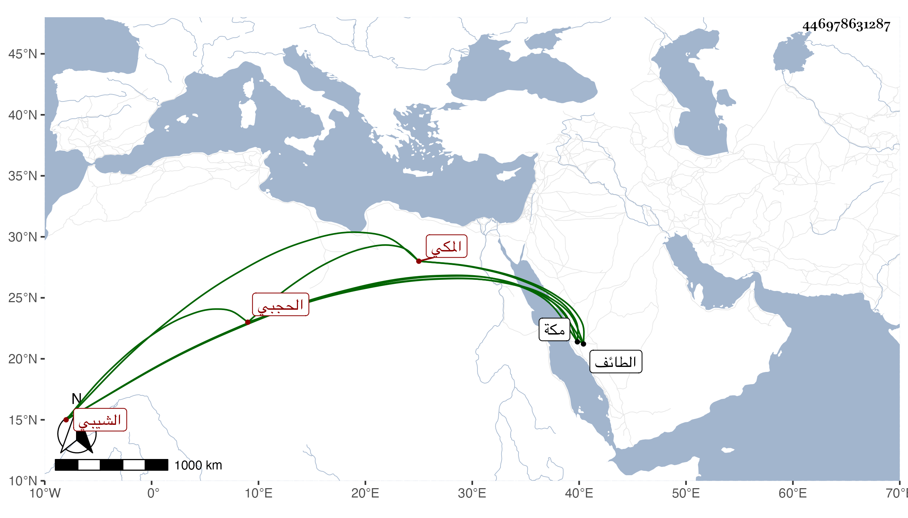

0902Sakhawi.DawLamic.ITO20230111-ara1.EIS1600.446978631287
Biography ID: 446978631287
842
علي بن عبد الله بن علي بن أبي راجح محمد بن إدريس بن غانم بن مفرح ابن محمد بن عيسى بن محمد بن عبد الرحمن بن بركات بن عبد القادر الشيبي الحجبي المكي . مات في توجهه إلى الطائف مقتولا في صبيحة يوم السبت مستهل المحرم سنة إحدى وأربعين وحمل لمكة فدفن بها عفا الله عنه . أرخه ابن فهد .
